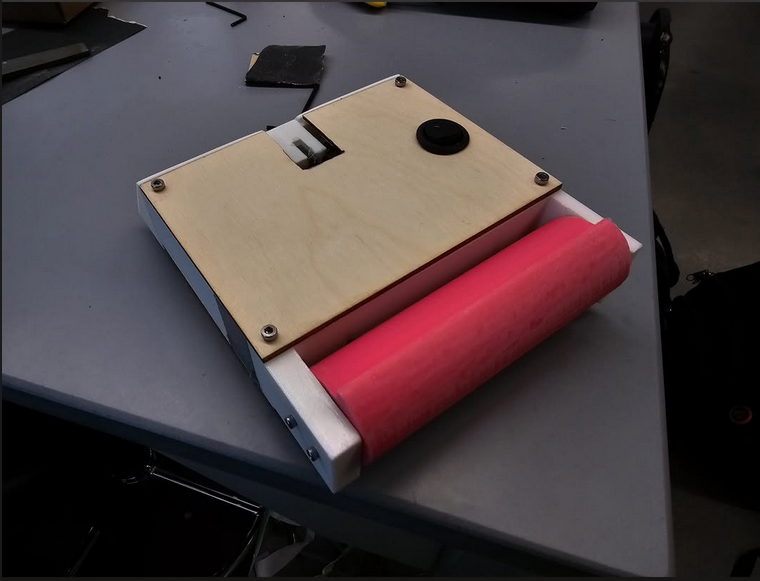
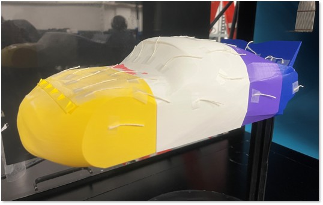

2026 IREC competition rocket with airbrakes, canards, and a 3U cubesat payload.

Custom L2 rocket doubling as a test platform for airbrakes and flight computer.

Finding the dampening of different shoes using a weight.

Using satellites to detect ground deformation at the centimeter level.

2025 IREC competition rocket.

A 1 lb antweight battlebot with a spinning drum weapon and custom gear drivetrain.

Aerodynamic analysis and vortex generator testing on a scale model.

A scratch designed and built L1 certification rocket.